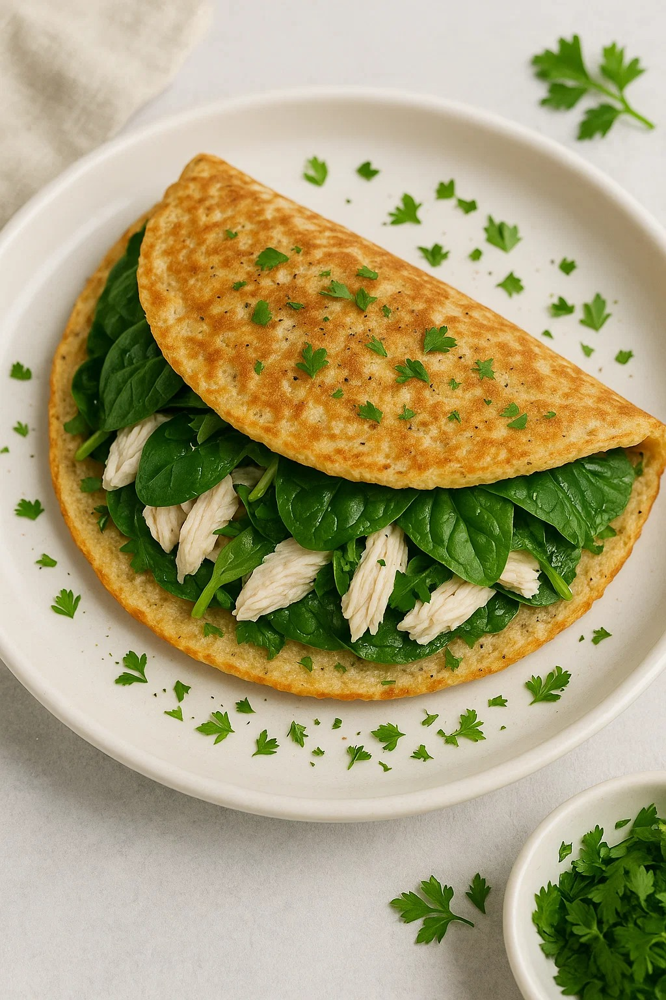
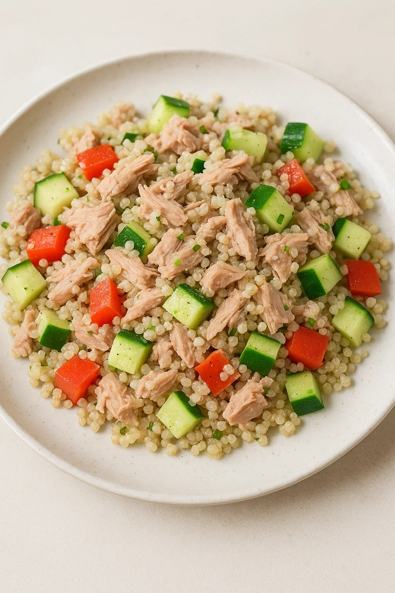
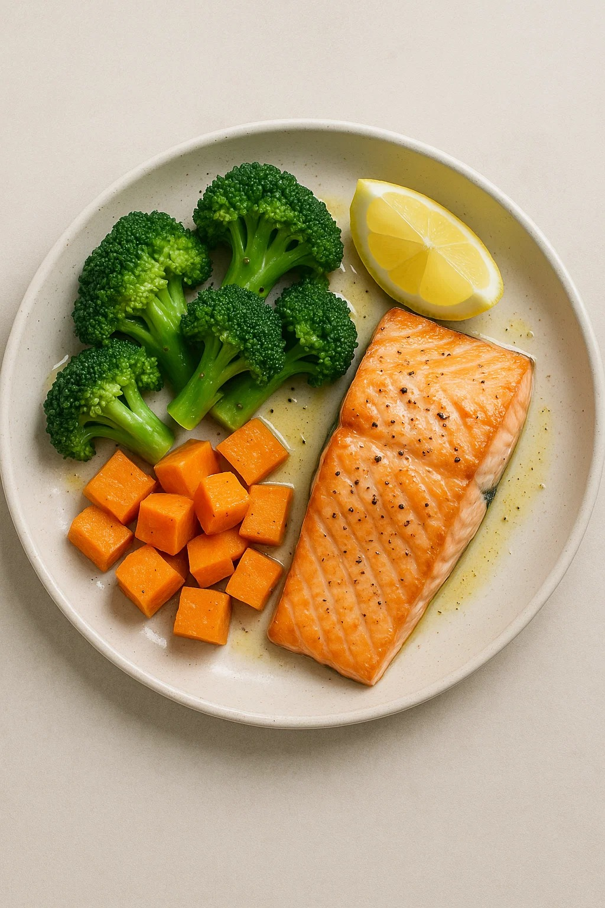
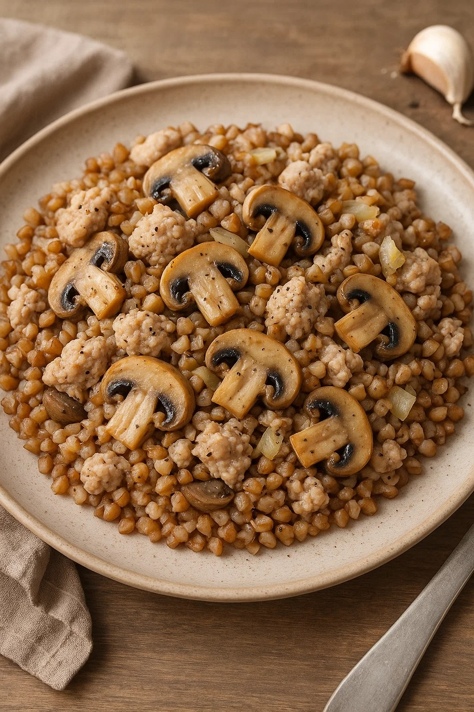

День 1: Овсяноблин с курицей и шпинатом
≈ 350 ккал
Ингредиенты:
- 40 г геркулеса
- 1 яйцо
- 100 г отварной куриной грудки
- 50 г шпината
- Соль, перец, зелень по вкусу
Приготовление:
- Смешать овсянку с яйцом и чуть воды до консистенции теста.
- Выпечь блин на сухой сковороде 2–3 минуты с каждой стороны.
- На одну половину положить нарезанную курицу и шпинат, сложить блин пополам.
- Прогреть ещё минуту, разрезать и подать.

День 2: Тунец с киноа и овощами
≈ 400 ккал
Ингредиенты:
- 100 г киноа (сухого)
- 120 г консервированного тунца в собственном соку
- 1/2 болгарского перца
- 1/2 свежего огурца
- Лимонный сок, соль, перец
Приготовление:
- Киноа промыть, отварить в 200 мл воды 15 минут.
- Овощи нарезать кубиками, смешать с тунцом.
- Добавить готовое киноа, заправить лимонным соком и специями.
- Перемешать и подать тёплым или холодным.

День 3: Творожные сырники в духовке
≈ 300 ккал
Ингредиенты:
- 200 г нежирного творога
- 1 яйцо
- 2 ст. л. цельнозерновой муки
- Подсластитель или 1 ч. л. мёда
- Ваниль по вкусу
Приготовление:
- Смешать творог, яйцо, муку и подсластитель до однородности.
- Сформировать сырники, выложить на противень с пергаментом.
- Выпекать при 180 °C 20–25 минут.
- Подавать с ягодами или нежирным йогуртом.

День 4: Лосось с брокколи и сладким картофелем
≈ 450 ккал
Ингредиенты:
- 150 г филе лосося
- 200 г брокколи
- 150 г сладкого картофеля
- Оливковое масло, соль, перец, лимон
Приготовление:
- Сладкий картофель нарезать кубиками, отварить 10 мин.
- Брокколи разделить на соцветия, слегка отварить.
- Лосось посолить, поперчить, сбрызнуть лимоном — запечь при 200 °C 12–15 мин.
- Выложить на тарелку овощи и лосось, сбрызнуть маслом.

День 5: Индейка с гречкой и грибами
≈ 400 ккал
Ингредиенты:
- 100 г гречки (сухой)
- 150 г фарша из индейки
- 100 г шампиньонов
- 1 луковица
- Чеснок, соль, перец
Приготовление:
- Гречку отварить до готовности.
- Обжарить лук и грибы, добавить индейку, приправить и готовить 7 мин.
- Смешать с гречкой, прогреть вместе 2–3 минуты.
- Подавать горячим.

День 6: Салат с куриной грудкой и авокадо
≈ 350 ккал
Ингредиенты:
- 120 г отварной куриной грудки
- 1/2 авокадо
- 50 г микса салата
- 10 г семян тыквы
- Лимонный сок, оливковое масло, соль, перец
Приготовление:
- Нарезать курицу и авокадо кубиками.
- Смешать с салатом и семенами.
- Заправить маслом и лимонным соком.
- Перемешать и сразу подавать.

День 7: Протеиновый смузи с ягодами
≈ 250 ккал
Ингредиенты:
- 150 г замороженных ягод (клубника, черника)
- 1 банан
- 200 мл нежирного кефира или йогурта
- 1 мерная ложка протеинового порошка
- Мёд по вкусу
Приготовление:
- Все ингредиенты поместить в блендер.
- Взбить до гладкой консистенции.
- Перелить в стакан и подавать сразу.